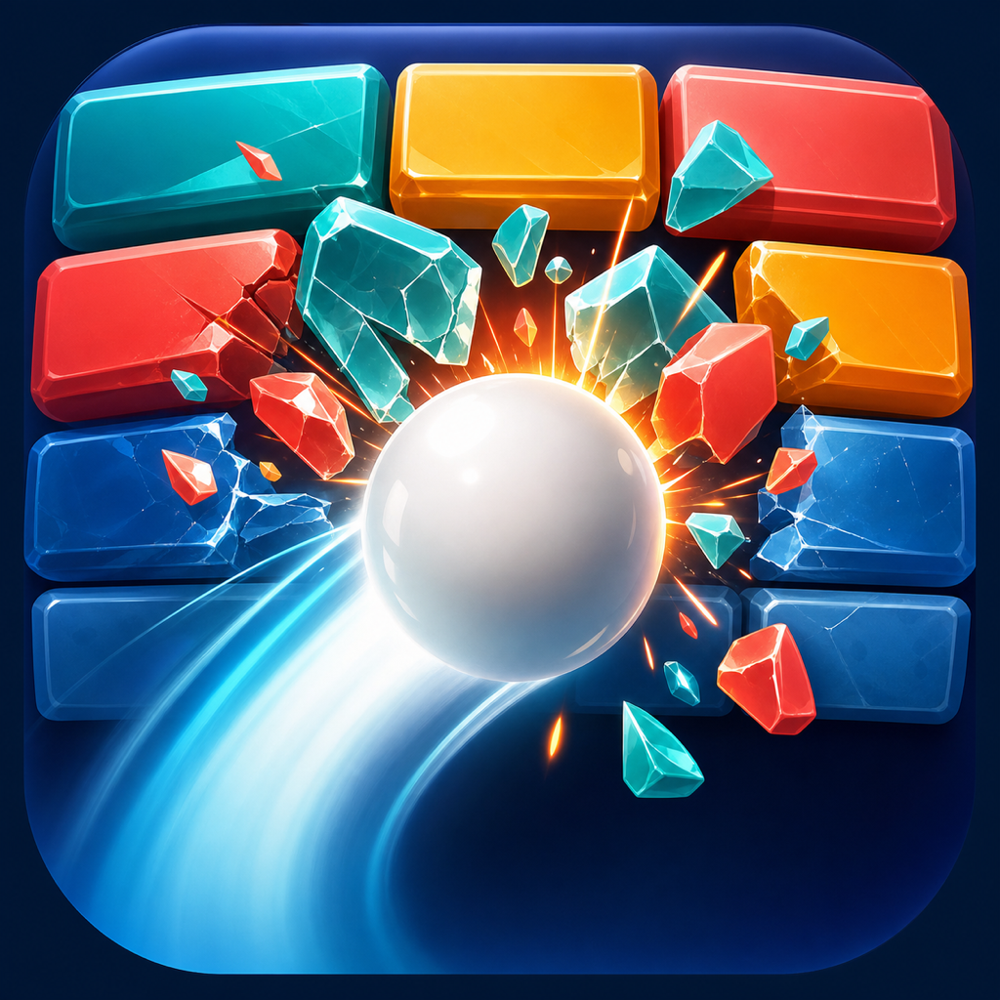

Pure Tilt Control
Move by tilting your wrist. Calibration starts when the run begins.

Gyro Block Crush WatchApple Watch Edition
A compact tilt-control arcade game built for Apple Watch. Roll through 8 wrist-sized stages, smash every block, and keep your run alive before time runs out.
Made for quick sessions
Tilt your wrist to steer, use the Digital Crown or on-screen actions when available, and clear short time-attack layouts tuned for the Watch display.
Move by tilting your wrist. Calibration starts when the run begins.
8 layouts use bombs, ceramic blocks, warp walls, and a compact final hall.
Clear fast, keep control on a small screen, and chase better ranks.